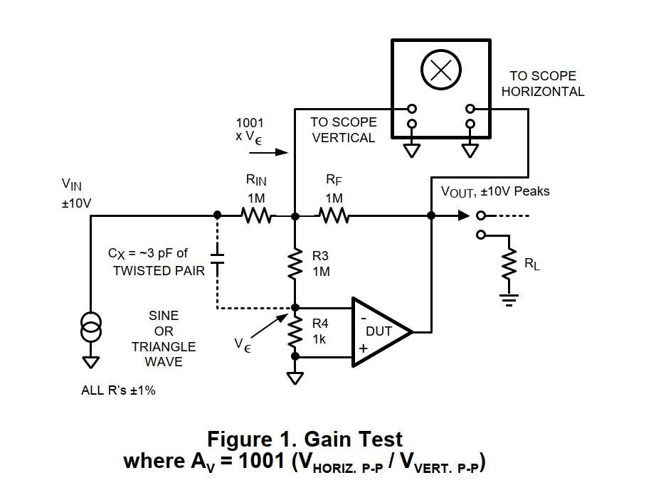
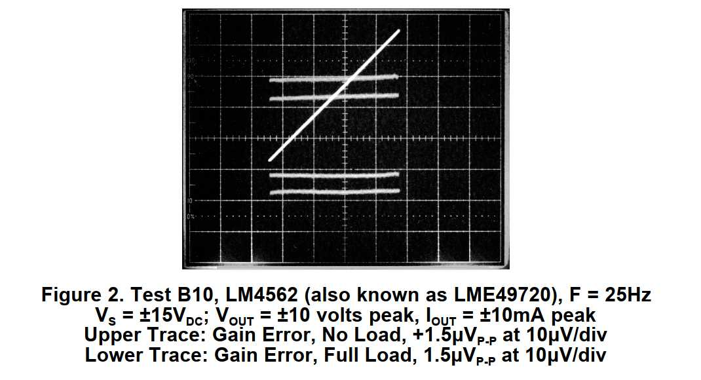
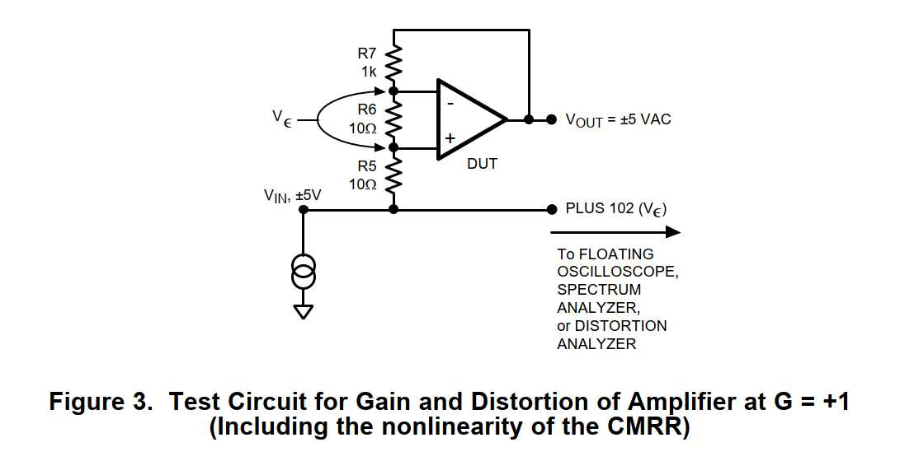

Операционные усилители можно применять в прецизионных устройствах, даже если их линейность не лучше 5 ppm. Большинство людей не слышат искажений усилителя ниже 1 ppm, даже если включить каскадом 10 таких ступеней.
Тем не менее для прецизионных измерительных приборов или высококачественного звуковоспроизведения обычно стоит выбрать операционный усилитель с хорошей линейностью. Обратитесь к AN-1485, где показаны примеры хорошей, средней и плохой линейности для биполярных и КМОП-усилителей. Вопреки распространённому мнению, КМОП-усилители с выходом на стоковой нагрузке не обязательно уступают по линейности старым усилителям на биполярных транзисторах.
Линейность часто указывают в дБ ниже уровня сигнала (например, −110 дБ) или в процентах (например, 0,0003%). Однако большинство инженеров не знакомы с нелинейностью ниже −120 дБ, поэтому в данном документе линейность обычно выражается в миллионных долях (ppm) относительно выходного сигнала (3 ppm или 0,3 ppm).
Линейность часто измеряют на низких частотах, потому что там это сделать проще. Линейность можно измерить как для инвертора, так и для повторителя. Теоретически можно вычесть входной сигнал из выходного и построить график отклонений в зависимости от VOUT. Однако на практике сделать это с полной точностью практически невозможно. Поэтому используется метод вычитания в реальном времени. Результаты измерения видны всего за несколько секунд.
В качестве альтернативы можно использовать анализатор искажений, например Audio Precision System Two Cascade SYS-2522, который даёт прямое показание искажений. Однако даже этот метод имеет ограничения, когда искажения опускаются ниже 3 ppm.
Схема на Рисунке 1 — это классическая измерительная установка, используемая уже более 40 лет. Резисторы RIN и RF задают входное напряжение (обычно 20 В размах), которое формирует на выходе те же 20 В размах, наблюдаемые на осциллографе. Источник сигнала должен иметь регулятор смещения, с помощью которого пользователь добивается, чтобы выходной сигнал качался на ±10 В без смещения. Таким образом, напряжение смещения VOS усилителя фактически компенсируется.
Резисторы R3 и R4 усиливают напряжение ошибки (Vε) примерно в 1000 раз — это отношение R3 к R4. Так, если коэффициент усиления усилителя равен 1 миллиону, а напряжение ошибки составляет 20 мкВ размах, то на вертикальном входе осциллографа будет 20 мВ размах. Хороший операционный усилитель с коэффициентом усиления 1 миллион легко выполняет оба требования к усилению. Такая схема позволяет обойтись без малошумящего предусилителя, который неизбежно добавил бы собственного шума. См. Рисунок 1.

Теоретически напряжение «1000·Vε» можно наблюдать любым измерителем или осциллографом. Однако для того, чтобы увидеть линейную и нелинейную составляющие, лучше всего использовать осциллограф в режиме X-Y (кроссплот). Тогда любые изломы и изгибы кривой будут соответствовать определённому уровню выходного сигнала. Наклоны, изломы и изгибы можно различить, даже несмотря на шум, превышающий эти сигналы! Глаз способен отфильтровать такие ошибки, как шум, смещение и линейные погрешности, позволяя увидеть именно нелинейные ошибки.
Во многих испытаниях вместо синусоидального выгоднее использовать треугольный сигнал. Более подробное обсуждение преимуществ треугольного сигнала приведено в AN-1485. Для быстродействующего усилителя обычно подходит частота около 3–30 Гц. См. Рисунок 2.

LM4562 — хороший быстродействующий усилитель с частотой единичного усиления 54 МГц. Но при выходном сигнале 20 В размах на частоте 1 кГц ошибка суммирующей точки (Vε) может достигать ±118 мкВ. Сигнал на вертикальном входе осциллографа составит ±118 мВ пиковое, или 236 мВ размах. Когда вы уменьшаете чувствительность осциллографа, чтобы уместить этот сигнал на экране, вы уже не можете различить 1 мкВ — едва видно 10 мкВ. Как же увидеть ошибку в 1 мкВ на частоте 1 кГц?
Решение — подключить небольшой отрезок витой пары в качестве подстроечного конденсатора Cx (см. Рисунок 1). Используйте провод с тефлоновой изоляцией. Когда вы скручиваете (или раскручиваете) витую пару, чтобы компенсировать большую часть динамических ошибок усилителя, сигнал уменьшается до нескольких мВ размах, и можно различить эквивалент 1 мкВ нелинейности даже при наличии шума. Нелинейность данного усилителя, по всей видимости, составляет около 0,08 ppm относительно входа. Это примерно −159 дБ относительно сигнала 7 В (среднеквадратичное).
Схема с резисторами 1 МОм, 1 МОм, 1 кОм, 1 МОм немного шумит — что неудивительно, так как шум резистора 1 кОм больше собственного шума LM4562. Чтобы лучше разрешить искажения, можно использовать меньшие номиналы резисторов вместо 1 МОм/1 МОм. Я просто подключил 20 кОм параллельно резисторам 1 МОм и 20 Ом параллельно 1 кОм. Я выбрал такой масштаб, потому что мне было легко добавить переменный воздушный конденсатор 150 пФ параллельно конденсатору «3 пФ». Это сработало очень хорошо. Я смог увидеть некоторую квадратурную ошибку даже с треугольным сигналом, а с синусоидальным — небольшие искажения ниже 0,08 ppm. Похоже, это вторая гармоника на частоте 2 кГц, с уровнем около −159 дБ. Тем не менее возможность дальнейшего улучшения ещё не исчерпана.
Ранние испытания LM4562 показали, что нелинейность может опускаться до 0,3 ppm. Это верно, поскольку при входном сигнале более 3 В (среднеквадратичное) нелинейность начинает ухудшаться из-за несовершенного (нелинейного) коэффициента ослабления синфазного сигнала (КОСС). Это наблюдалось при использовании усилителя в схеме повторителя с единичным усилением (см. Рисунок 3). Если вы используете усилитель как повторитель, у LM4562 действительно есть некоторая нелинейность, но её можно улучшить. Напишите нам, чтобы получить рекомендации. Однако схема на Рисунке 3 обеспечивает достаточно большое усиление (100), чтобы увидеть сигнал, шум и искажения. Это усиление равно отношению (R5 + R6 + R7)/R6.

Рисунок 2 показывает, что ошибка суммирующей точки составляет около 0,5 мкВ размах нелинейности при нагрузке 1 МОм (верхний луч). При нагрузке 1 кОм (нижний луч) отклонение от наилучшей прямой составляет ближе к 1 мкВ размах (1 мВ размах на вертикальном входе осциллографа). Таким образом, коэффициент усиления составляет примерно от 10 до 40 миллионов, а нелинейность — около 1/20 ppm. Это один из лучших усилителей, которые нам удавалось измерить — LM4562. Другие усилители со сравнимой нелинейностью — LME49710 и LME49740. Если линейность усилителя лучше 1/20 ppm, нелинейность окажется ниже уровня шума и могут потребоваться особые методы, например подключение анализатора спектра или анализатора искажений после схемы на Рисунке 1.
LM4562 — один из лучших по линейности усилителей в мире. У него одни из самых низких искажений среди операционных и любых линейных усилителей — лучше 0,2 ppm в диапазоне от 0,01 до 2 кГц. Данная методика измерения приближается к пределу разрешения около 1/10 ppm. Однако с использованием анализатора спектра можно разрешить и чуть более низкие уровни. В отличие от других усилителей с хорошими цифрами и графиками, но не лучшим звучанием, про LM4562 говорят, что он «хорошо звучит» — по отзывам людей с хорошей аудиальной чувствительностью (с «хорошими ушами»). Вероятно, это связано с его хорошей динамической устойчивостью и чистой скоростью нарастания. Электронные измерения согласуются с этими наблюдениями.